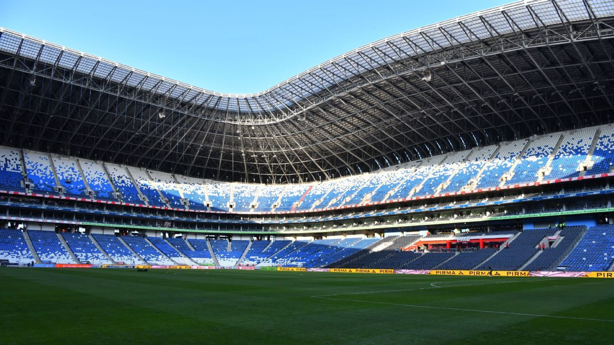

Estadios y Contacto
Los estadios son espacios donde los aficionados se reunen para observar partidos y apoyar a sus equipos favoritos.

Estadios Reconocidos
- Estadios Santiago Bernabeu
- Estadio Azteca
- Estadio Wembey
- Estadio Camp Nou
Los estadios son espacios donde los aficionados se reunen para observar partidos y apoyar a sus equipos favoritos.
